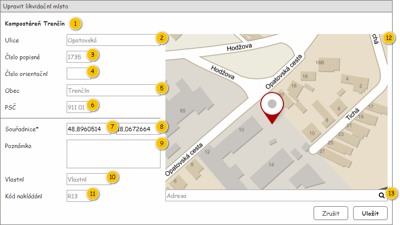

Formulář slouží k editaci entity Likvidační místo, která je jeho povinným vstupním parametrem.

| Callout | Komponenta | Nadpis | Typ komponenty | Příklad hodnoty | Hodnota | Výchozí hodnota | Formát | Zpřístupněná | Viditelná | Chování | Validace | Poznámka |
|---|---|---|---|---|---|---|---|---|---|---|---|---|
| 1 | Název | – | Label | Kompostáreň Trenčín | Entita Likvidační místo. | – | – | Vždy | – | – | – | |
| 2 | Ulice | Ulice | TextBox | Opatovská | Entita Adresa – atribut Adresa entity Likvidační místo. | – | Nikdy | Vždy | – | – | – | |
| 3 | Číslo popisné | Číslo popisné | TextBox | 1735 | Entita Adresa – atribut Adresa entity Likvidační místo. | – | <Číslo popisné> | Nikdy | Vždy | – | – | – |
| 4 | Číslo orientační | Číslo orientační | TextBox | A | Entita Adresa – atribut Adresa entity Likvidační místo. | – | <Číslo orientační> | Nikdy | Vždy | – | – | – |
| 5 | Obec | Obec | TextBox | Trenčín | Entita Adresa – atribut Adresa entity Likvidační místo. | – | Nikdy | Vždy | – | – | – | |
| 6 | PSČ | PSČ | TextBox | 911 01 | Entita Adresa – atribut Adresa entity Likvidační místo. | – | Nikdy | Vždy | – | – | – | |
| 7 | Zeměpisná šířka | Souřadnice* | TextBox | 48,8960514 | Entita Likvidační místo. | – | Vždy | Vždy | – | Povinné. Desetinné číslo. | – | |
| 8 | Zeměpisná délka | – | TextBox | 18,0672664 | Entita Likvidační místo. | – | Vždy | Vždy | – | Povinné. Desetinné číslo. | – | |
| 9 | Poznámka | Poznámka | TextBox | V neděli zavřeno. | Entita Likvidační místo. | – | Nikdy | Vždy | – | – | – | |
| 10 | Vlastní Likvidační místo | Vlastní | TextBox | Vlastní | Entita Likvidační místo. | – | Pokud
Jinak:
| Nikdy | Vždy | – | – | – |
| 11 | Kód nakládání | Kód nakládání | TextBox | R13 | Entita Likvidační místo. | – | Nikdy | Vždy | – | – | – | |
| 12 | Mapa | – | Map | – | Entita Likvidační místo. | – | Zobrazení souřadnic v mapě. | Vždy | Vždy | Kliknutím do mapy nebo posunutím zobrazeného bodu v mapě dojde k přepsání polí pro nastavení zeměpisné délky a šířky. | – | – |
| 13 | Hledání adresy | – | AutoSuggestTextBox | – | – | – | – | Vždy | Vždy | Hledání adresy | – | – |
| Odkaz | Stručný popis změny/doplnění |
|---|---|
| Rozložení | Odebrání kódu nakládání (naznačeno modře). |
| Odkaz | Stručný popis změny/doplnění |
|---|---|
| Rozložení | Přidáno pole s možností hledat adresu v mapě. |
| Odkaz | Stručný popis změny/doplnění |
|---|---|
| Aktualizace drátového diagramu. | |
| Přehled UI komponent | Aktualizace přehledu UI komponent. |